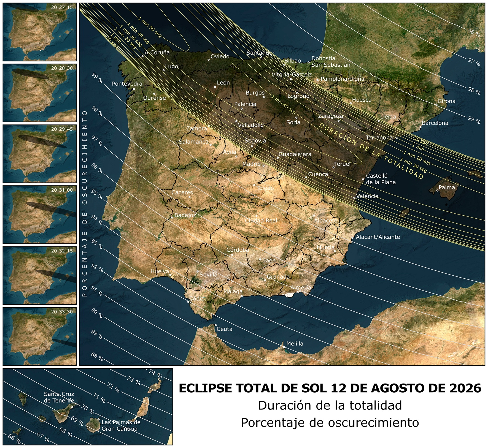

En España, el eclipse se verá en sus últimas fases, pues el fenómeno termina en Baleares, casi en la puesta de sol. Aun así, nuestro país es el mejor lugar del mundo para ver el eclipse, por lo que cabe esperar que hasta nuestro territorio se desplacen numerosos cazadores de eclipses y turistas en general. Se da además la circunstancia de que el eclipse antecede a la noche del máximo de las Pérseidas, por lo que habrá la oportunidad de permanecer en el lugar de observación del eclipse para disfrutar con la lluvia de estrellas. Recordemos que los eclipses de sol necesariamente suceden durante el novilunio, por lo que en la noche del 12 al 13 de agosto de 2025, la Luna no supondrá ningún estorbo para observar los meteoros.

La banda más oscura es la franja de totalidad, donde el Sol llegará a ocultarse completamente. Los contornos en esa banda indican la duración de la totalidad. En el resto del territorio el eclipse será parcial, y los contornos indican el porcentaje de oscurecimiento.
El eclipse se verá como total en gran parte de la mitad norte peninsular y en Baleares, mientras que en la mitad sur y Canarias se podrá ver como parcial.
- El primer lugar donde será visible será Galicia. En A Coruña el eclipse comenzará a las 19:31 horas, tendrá su máximo a las 20:28 y finalizará a las 21:22, unos minutos antes de la puesta de sol, siendo la duración de la totalidad de 76 segundos, con el Sol a una altura de 12 grados.
- El último lugar donde será visible la totalidad será Baleares. En Palma de Mallorca, el eclipse comenzará a las 19:38 horas, tendrá su máximo a las 20:32, unos minutos antes de la puesta de sol, con el Sol ya muy bajo, a una altura de tan solo 2 grados.
Vemos que el eclipse sucede a muy baja elevación en todo el territorio español (más baja cuanto más al este), por lo que, para disfrutar de una visión despejada del fenómeno es muy recomendable buscar un lugar con el horizonte oeste (el lugar por el que se pondrá el Sol) muy despejado de obstáculos como montes, edificios, árboles, etc.
En la siguiente web tienes información del eclipse provincia a provincia.
- En esa web, entrando en el apartado de recursos, también puedes explorar la meteorología más probable de tu localidad el día del eclipse.
- También puedes visitar el libro digital que el ING ha editado sobre el trío de eclipses ibéricos para obtener más información.
Y en la siguiente tienes un link para cada una de las comunidades autónomas por donde pasa la totalidad